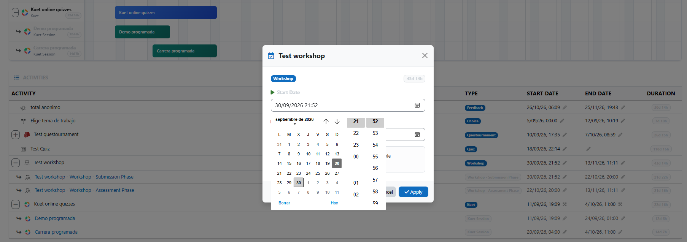
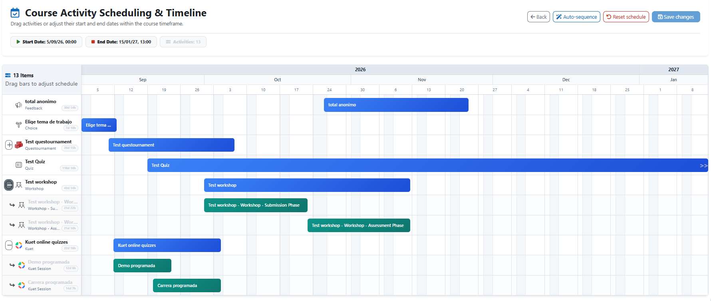
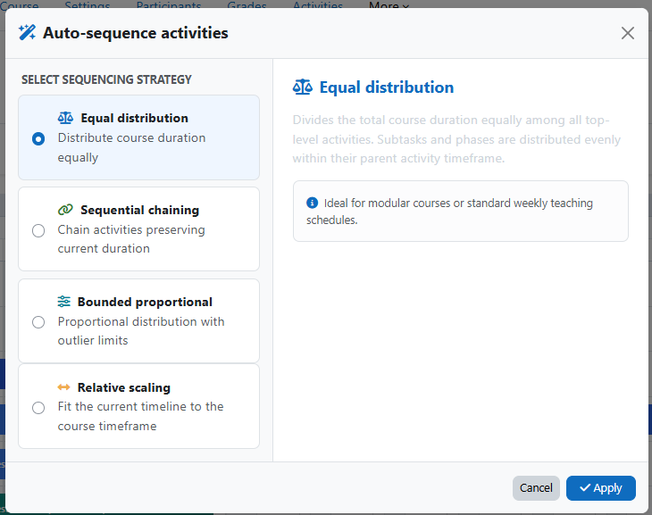

Drag, resize, understand
Move activities directly on a responsive Gantt timeline. See dates, durations, weekends and dependencies at a glance.
01Open source · GPLv3+
A visual Gantt timeline for Moodle that makes course-wide date changes clear, fast and safe.

Designed for real course changes
Move activities directly on a responsive Gantt timeline. See dates, durations, weekends and dependencies at a glance.
01Parent activities and subactivities move in harmony, with proportional resizing for complex modules.
02Official calendar events, gradebook dates and course caches stay synchronized through Moodle-aware adapters.
03Choose equal, sequential, proportional or relative scheduling strategies when the academic calendar shifts.
04A calmer way to reschedule
Access Reschedule dates from the course navigation and see every mapped activity in context.
Drag bars, edit exact timestamps or apply an assisted sequencing strategy.
Validated changes update Moodle's connected subsystems in one atomic operation.


Moodle-aware by design
Dedicated adapters handle complex activities. The autonomous extractor subsystem covers standard modules, while a safe generic fallback keeps third-party extensions useful.
Read the technical notes ↗Ready to try it?
Clone the plugin into your Moodle installation, run the upgrade and start planning with a complete view.
# from your Moodle root
git clone https://github.com/juacas/
moodle-local_reschedule.git local/reschedule
php admin/cli/upgrade.php